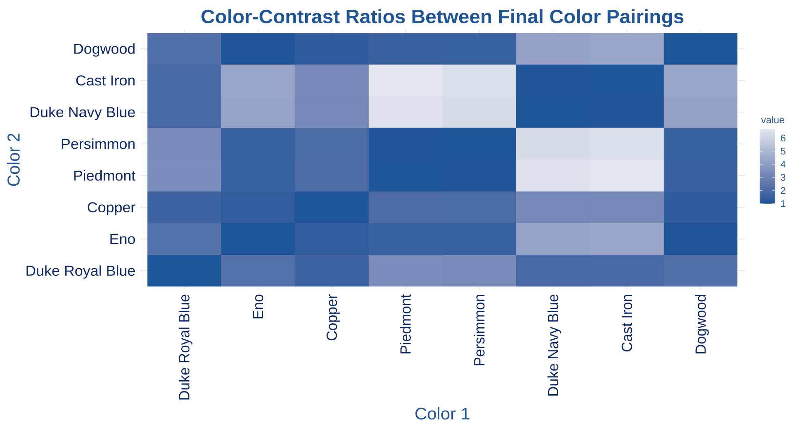
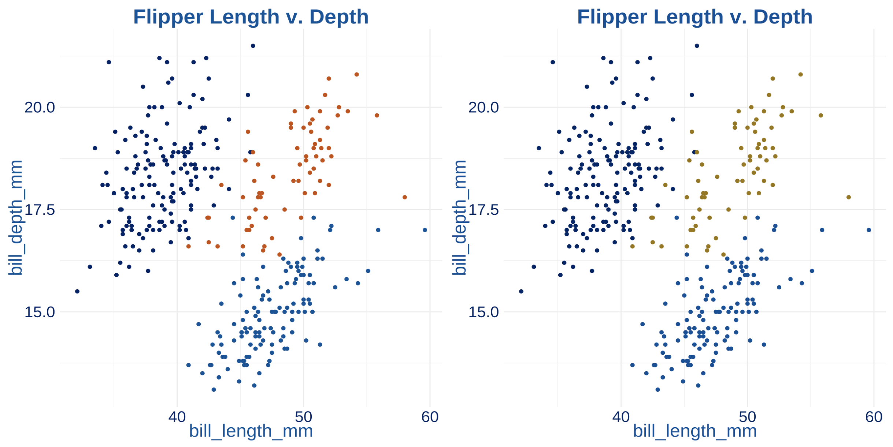

2 Methods
2.1 Color Sources
The office of University Communications provides an official color guide for the Duke brand. The color palette is intended to both bolster the brand of the University, as well as ensure cohesion among all official content [1]. The primary colors of the official palette are Duke Royal Blue and Duke Navy Blue. It is highly encouraged that one of these colors is present in any Duke official project, as they are reflective of the Duke Brand. The color guide also details an extended palette, which includes an additional 18 secondary and tertiary colors. Colors such as Copper, Eno, Ironweed, Persimmon, and Cast Iron are in the extended palette. University Communications urges the use of this extended palette for, “graphic accents, typography, backgrounds, [and] call-to-action buttons” [2]. For each color in the palette, users can access the following information:
Color Name
Pantone Matching System (PMS)
Hex Code (HEX)
Cyan, Magenta, Yellow, and Key (CMYK) Color Model
Red, Green, Blue Color Model
We will primarily interact with the Hex codes for these colors in this project. Hex codes are a hexidecimal (base 16 numbering system) format for representing the amount of RBG in a particular shade [3] [4]. Additionally, Hex codes are recognized as the best color system for HTML and CSS formats; therefore, their use will work well for data visualization in publication and web browser contexts.
| Color | Name | Hex Code |
|---|---|---|
| Duke Royal Blue | #00539B | |
| Duke Navy Blue | #012169 | |
| Copper | #C84E00 | |
| Persimmon | #E89923 | |
| Dandelion | #FFD960 | |
| Piedmont | #A1B70D | |
| Eno | #339898 | |
| Magnolia | #1D6363 | |
| Prussian Blue | #005587 | |
| Shale Blue | #0577B1 | |
| Ironweed | #993399 | |
| Hatteras | #E2E6ED | |
| Whisper Gray | #F3F2F1 | |
| Ginger Beer | #FCF7E5 | |
| Dogwood | #988675 | |
| Shackleford | #DAD0C6 | |
| Cast Iron | #262626 | |
| Graphite | #666666 | |
| Granite | #B5B5B5 | |
| Limestone | #E5E5E5 |
In 2018, Duke added a color accessibility to their brand guide outlining how users could meet Web Content Accessibility Guidelines (WCAG) 2.0 AA guidelines. The WCAG are internationally recognized standards on how to make web content more accessible to people with disability - including those with color vision deficiency. Their accessibility standards are principled on four tenets: Perceivable, Operable, Understandable, and Robust [5]. Duke’s accessibility guide illustrates a grid of every text-background color pairing and its respective compliance to the WCAG. There are four compliance categories specified:
AAA: highest compliance, text-background contrast ratio of 7+
AA: mid-range compliance, text-background contrast ratio of 4.5+
AA18: mid-range compliance with large text only (18pt or 14pt bold), text-background contrast ratio of 3+
DNP: does not pass compliance guidelines, text-background contrast ratio of less than 3
These compliance metrics will be an important resource for identifying color combinations that are accessible and selecting them for use in the duke package. The ratios provided by this guideline are intended for background and foreground combinations; however, they also apply to colors near and/or adjacent to one another. Duke’s inclusion of an accessibility guide on their branding website is an important step, but it would benefit from a built-in functionality that allows users to interact with its information more easily. The duke package aims to empower users to engage with these accessibility recommendations more easily when creating data visualizations.
2.2 Color Metrics
In selecting the optimal color palette, several color difference metrics were considered. Euclidean distance is a commonly used measure; however, it is perceptually uniform, meaning that color pairings that have similar Euclidean distances can appear vastly different perceptually [6]. This is because of irregularity in the standard RGB (sRGB) color space, which causes evenly spaced hues to range in their perceptual similarity or difference [6]. The CIE chromaticity diagram (see Figure X) exhibits the color spectrum according to human vision. Its parabolic nature leads to irregularities in linearly scaled color scales and therefore weakens its efficacy in this context.

To accommodate these irregularities and center our color selection on human perception, we use the color contrast ratio as our primary metric. Color contrast is computed using “relative luminance” [7]. According to WCAG, relative luminance is the “relative brightness of any point in a colorspace, normalized to 0 for darkest black and 1 for lightest white”[8]. The formula for the color contrast ratio is as follows:
\[\frac{(L1 + 0.05)} {(L2 + 0.05)}\]
By dividing the the relative luminance of the lighter color (L1) by that of the darker color (L2), the color contrast ratio can range from a value of 1 (no contrast) to 21 (highest contrast)[9]. In line with the WCAG guidelines, we plan on only including color pairings in the package that meet a compliance level of AA18 or better.
It must be noted that given a total of 22 colors in the Duke official suite, our definition of the “optimal” palette may not be fully reliant on the color contrast ratio. The package is at its core, representative of the Duke brand and should meet certain aesthetic expectations for those with and without color vision deficiency. The development of our color scales, specifically, incorporates a somewhat ad-hoc approach in order to strike a balance between accessibility and recognition of the Duke brand. In finding a color palette successful on both fronts, users can be confident that they are producing visualizations that are identifiably Duke-related and accessible to a greater audience.
2.3 Package Development
As previously mentioned, package development posed a new challenge to the skill set I had learned through the Statistics curriculum. The “R Packages” text book served as an essential guide for learning, understanding, and eventually building the duke package. By clearly outlining the key structures of an R package, the functionality of the devtools package, and the importance of testing, I was well equipped to create duke.
The duke package offers four functions for users to make Duke branded visualizations in a colorblind friendly way.
2.3.1 theme_duke()
This function is largely inspired by the theme() function and its many derivatives. Its primary focus is to set the aesthetic elements for the visualization’s background and accessory features. These include the background color, grid lines, axis ticks, plot text, etc. With accessibility at the forefront of this project’s goals, it is essential that these choices lead to not only a visually pleasing result, but one that is comprehensible as well. To do so, theme_duke() implements a minimalist design with a White background and grid lines removed. This decision reduces excessive noise in the plot, and instead allows audiences to focus on the story the data tells. This design is complemented by uniform font text and coloring across the entirety of the visualization. Titles, axes, captions, and more, are all in Duke Navy Blue because of its strong contrast from the White background. It has a contrast ratio of 14.76 with White, which is the third highest among all colors in the Duke extended palette.
In addition, all text is in Atkinson-Hyperlegible font. Named after the founder of the Braille Institute, J. Robert Atkinson, the font uses “unambiguous, distinctive elements” to improve readability for individuals with vision impairment [9]. Its use - both in the package and all complimentary documentation - is essential to promoting vision accessibility. Font implementation was one of the most difficult challenges throughout the package development process. RStudio provides a limited suite of fonts, requiring users to download and load additional font families to their own system. On the individual-level, this is not too difficult. However, the process necessitates careful thought when building a package for community use. How can users integrate quickly access the package’s required fonts? What font implementation will require minimal memory? Why is being transparent with users important? We must closely consider these questions, among others, when adding font specification to duke.
TO DO - Will know post meeting with Mine ** Explain font implementation, as well as what happens when users don’t have text
2.3.2 scale_duke_continuous()
This function integrates Duke’s official color palette into geometric objects (geom) that use a continuous scale. Examples of commonly used plots implementing continuous geom objects include scatter plots, heat maps, and jitter plots. The primary challenge of adopting a continuous color scale in a color blind friendly way is the lack of color distinction that naturally occurs. Continuous color scales are defined by a low and high end of a two color gradient, where the data assumes colors within this range based on its respective value. However, continuous plots do not need complete distinction to be successful. It is often most important that readers can identify overall trends in continuous plots.
To optimize scale_duke_continuous() for users with impaired color vision, the continuous gradient must sequence from a dark to a light color [10]. This is crucial because the data will be plotted beginning on the darker end of the scale, which has a higher contrast with our White background. Therefore, our gradient scale defines its low end as Duke Royal Blue and its high end as Hatteras. Duke Royal Blue has a color contrast ratio of 7.75 with White, making it sufficiently distinguishable. This, in tandem with Duke’s recommendation to include Duke Royal or Navy Blue in all communications, makes it the ideal choice for the low end of the scale. Hatteras is a light grey with subtle violet undertones, making it a pleasing complement to Duke Royal Blue [11]. It is not highly distinct from the White background, but this is typical for the light extreme of continuous scales.
2.3.3 scale_duke_color_discrete and scale_duke_fill_discrete
To implement a discrete scale from Duke’s official color palette, users can add scale_duke_color_discrete and scale_duke_fill_discrete to their visualizations. These functions provide a discrete palette that can be used for the color and fill parameters of ggplot geometric objects. An appropriate discrete palette is essential to creating user-friendly visualizations because its colors indicate distinct categories that exist in the data. Whereas continuous plots typically exhibit overall trends, discrete plots must be able to delineate effectively between specific groups. A majority of geom objects can incorporate a discrete scale, including bar plots, histograms, and density plots.
As previously mentioned, this project observes color contrast ratio as the primary metric for determining colorblind friendly combinations. To identify visibly distinct colors for our discrete palette, we generate the contrast ratio between all pairing from the Duke color guide, with the addition of White since it is the background color. Using this data, we can generate a heat map to visually explore the contrast of the pairings.

Lighter tiles in the heat map indicate pairings with higher contrast ratios, which are preferred. Using the heatmap and data frame of ratios, we craft a palette that promotes accessibility and the Duke aesthetic. It is quickly evident that selecting eight colors all with pairing ratios compliant with WCAG is not be possible. While this is not ideal, visualization best practices recommend users limit their number of discrete categories. This lends to less busy plots that are more easily understandable. Thus, the goal of the our discrete palette is to carefully order colors so that those most used (those at beginning of palette) are most compliant. The result is the following palette:
To ensure that this palette is accessible, we use the colorblindr package to visualize sample plots from the perspective of individuals with different types of color vision deficiency. There are several categorizations of CVD, yet the most common is red-green color blindness. As the name suggests, it makes it difficult for individuals to distinguish between red and green. Among this population, approximately 62.5% are deuteranomalous - meaning they have green-weak vision that makes green appear more red [12]. Protonopia and deuteraonopia prevent individuals from distinguishing between red and green at all, yet are far less prevalent at only 12.5% of the red-green colorblind population each [13].
Red-green color blindness is by far the most common type, accounting for approximately 99% of those with CVD. For the purpose of creating a feasible project scope, we focus primarily on accessibility for those with red-green colorblindness. Future work on this project - or one with a similar goal - should investigate the feasibility of visualization accessibility for those with blue-yellow color blindess, monochromacy, etc.

2.4 Lessons Learned
- Importance of creating test cases (testthat files)
- Use of cover package
- iterative process --\> identify issues immediately and address them
- engage with existing resources/packages
- drew a lot from other theme/scale_color functionalities2.5 References
1. https://brand.duke.edu/colors/
2. Ibid
3. https://www.techopedia.com/definition/29788/color-hex-code
4. https://www.sciencedirect.com/topics/engineering/hexadecimal
5. https://www.w3.org/TR/UNDERSTANDING-WCAG20/intro.html#introduction-fourprincs-head
6. <https://programmingdesignsystems.com/color/perceptually-uniform-color-spaces/>
7. https://www.accessibility-developer-guide.com/knowledge/colours-and-contrast/how-to-calculate/
8. https://www.w3.org/TR/WCAG20/#relativeluminancedef
9. ibid
9. https://fonts.google.com/specimen/Atkinson+Hyperlegible/about
10. https://clauswilke.com/dataviz/color-pitfalls.html
11. https://www.ppgpaints.com/color/color-families/neutrals/hatteras-gray
12. https://www.allaboutvision.com/conditions/color-blindness/types-of-color-blindness/
13. ibid